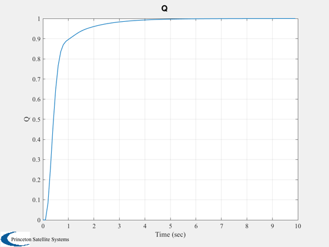

Design a simple aircraft control system consisting of a pitch rate tracking system.
------------------------------------------------------------------------
See also QECI, VTToVB, AC, ACBuild, ACInit, ACEngEq,
@acstate/acstate.m, C2DZOH, CLoopS, Altitude, Plot2D
------------------------------------------------------------------------
Contents
The first step is to get the linearized plant model
F16 database
d = ACBuild('F16');
d.theta0 = 0;
d.wPlanet = [0;0;0];
d.actuator.name = 'F16Actuator';
d.aero.name = 'ACAero';
d.engine.name = 'ACEngine';
d.rotor.name = [];
d.sensor.name = 'ACSensor';
d.disturb.name = [];
Load the standard atmosphere
d.atmData = load('AtmData.txt');
d.atmUnits = 'eng';
Actuator dynamics
d.actuator.throttleLag = 4.9505e-02;
d.actuator.elevatorLag = 4.9505e-02;
d.actuator.aileronLag = 4.9505e-02;
d.actuator.rudderLag = 4.9505e-02;
Control settings
d.control.throttle = 0.1385;
d.control.elevator = -0.7588;
d.control.aileron = -1.2e-7;
d.control.rudder = 6.2e-7;
Initial state vector Corresponding to Nominal in Table 3.4-3 p. 139 of the reference
altitude = 100;
alpha = 0.03691;
beta = -4.0e-9;
theta = 0.03991;
vT = 502;
v = VTToVB( vT, alpha, beta );
cG = [0.35;0;0];
r = [2.092565616797901e+07+altitude;0;0];
eulInit = [0;theta;0.00];
q = QECI( r, eulInit );
w = [0;0;0];
wR = 160;
engine = ACEngEq( d, v, r );
mass = 1/1.57e-3;
inertia = [9497;55814;63100;0;-982;0];
actuator = [0;0;0;0];
sensor = [];
flex = [];
disturb = [];
Initial time and state
x = acstate( r, q, w, v, wR, mass, inertia, cG, engine, actuator, sensor, flex, disturb );
Generate the state space model
stateName.actuator = {'Throttle Lag', 'Elevator Lag', 'Aileron Lag', 'Rudder Lag'};
d = ACInit( x, d, stateName );
g = AC( x, 0, 0, d, 'linalpha');
aC = get( g, 'a' );
cC = get( g, 'c' );
bC = get( g, 'b' );
kLon = [10 11 5 8 26];
kLonAQ = [11 8 26];
kAlphaSensor = 5;
kQSensor = 3;
kElevator = 2;
disp('The state space matrices for just alpha and q')
a = aC(kLonAQ,kLonAQ)
b = bC(kLonAQ,kElevator);
c = cC(kAlphaSensor,kLonAQ);
disp('The plant eigenvalues')
eig(a)
The state space matrices for just alpha and q
a =
-1.0167 0.90517 -0.0022528
-1.2031 -1.2647 -0.18001
0 0 -20.2
The plant eigenvalues
ans =
-1.1407 + 1.0362i
-1.1407 - 1.0362i
-20.2 + 0i
First design the inner loop
kAlpha = -0.08;
tauAlpha = 0.1;
aAlpha = -1/tauAlpha;
bAlpha = 1/tauAlpha;
cAlpha = kAlpha;
dAlpha = 0;
Test it in continuous mode
aCL = CLoopS( a, b, c, aAlpha, bAlpha, cAlpha, dAlpha );
disp('Closed loop eigenvalues for the inner loop')
eig(aCL)
Closed loop eigenvalues for the inner loop
ans =
-20.17 + 0i
-10.16 + 0i
-1.0758 + 1.3902i
-1.0758 - 1.3902i
Now add the outer loop
c = cC([kAlphaSensor kQSensor],kLonAQ);
kI = 1.5;
kQ = -0.5;
aCAS = [-1/tauAlpha 0;0 0];
bCAS = [1/tauAlpha 0;0 -1];
cCAS = [kAlpha kI];
dCAS = [0 kQ];
Test it in continuous mode
aCL = CLoopS( a, b, c, aCAS, bCAS, cCAS, dCAS );
disp('Closed loop eigenvalues for the inner and outer loops')
eig(aCL)
dT = 0.1;
[a, b] = C2DZOH( a, b, dT );
[aCAS, bCAS] = C2DZOH( aCAS, bCAS, dT );
nSim = 100;
xPlot = zeros(1,nSim);
qC = 1.0;
xCAS = [0;0];
x = [0;0;0];
y = [0;0];
for k = 1:nSim
xPlot(k) = y(2);
y = c*x;
xCAS = aCAS*xCAS + bCAS*[y(1);y(2) - qC];
yCAS = -(cCAS*xCAS + dCAS*y);
x = a*x + b*yCAS;
end
t = (0:(nSim-1))*dT;
Plot2D( t, xPlot, 'Time (sec)', 'Q' );
Closed loop eigenvalues for the inner and outer loops
ans =
-13.262 + 0i
-10.879 + 0i
-3.7436 + 3.3792i
-3.7436 - 3.3792i
-0.85305 + 0i
